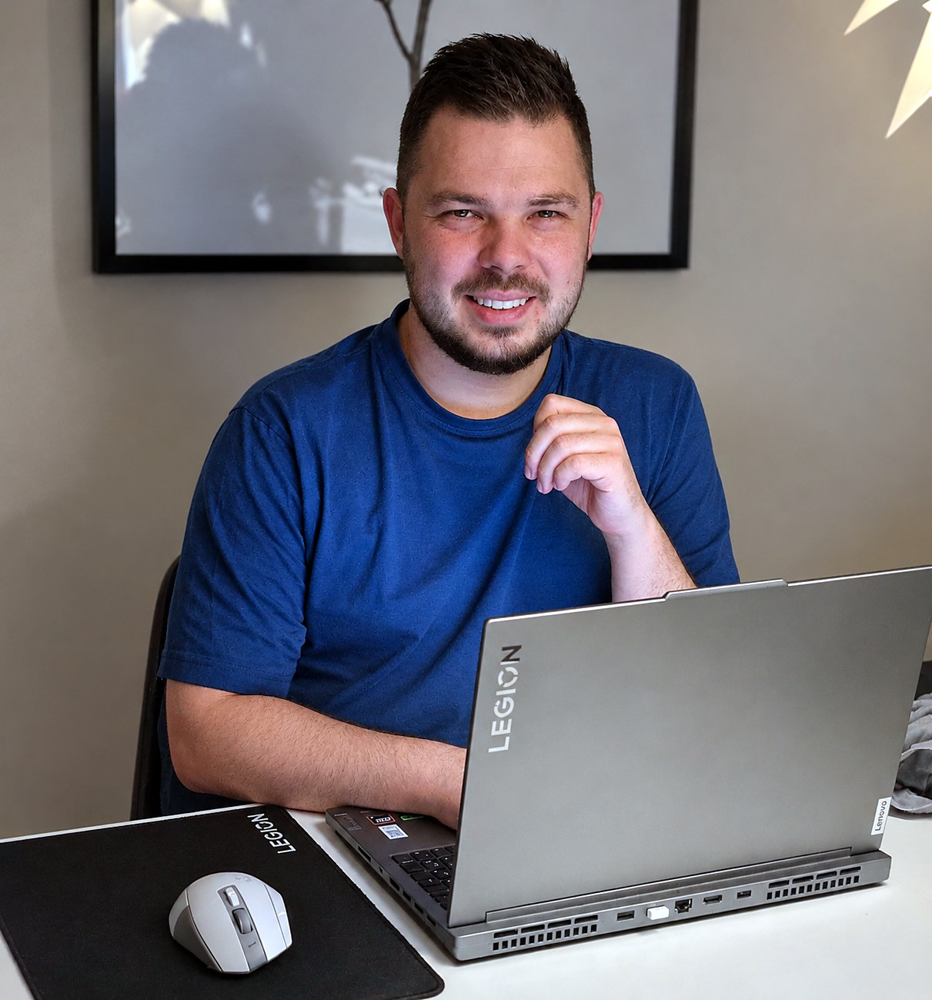
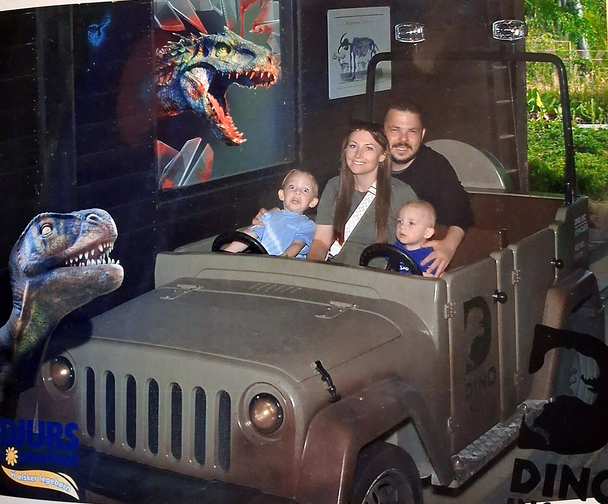
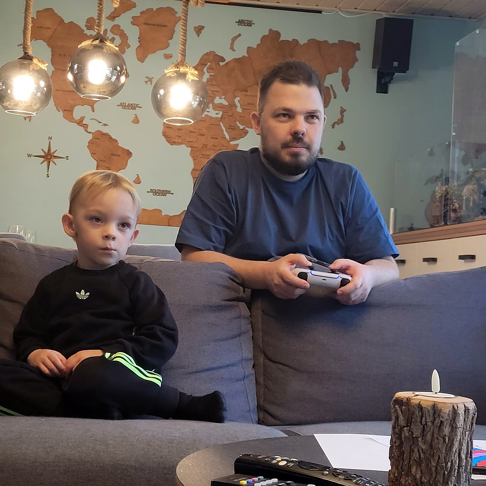
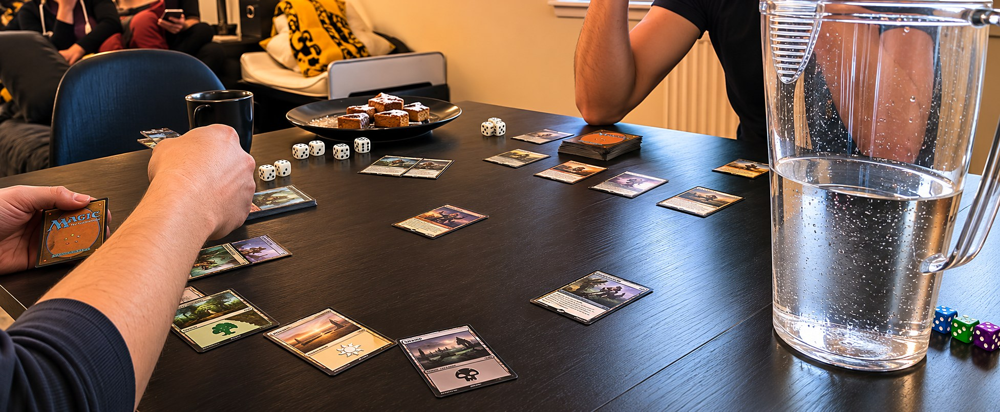
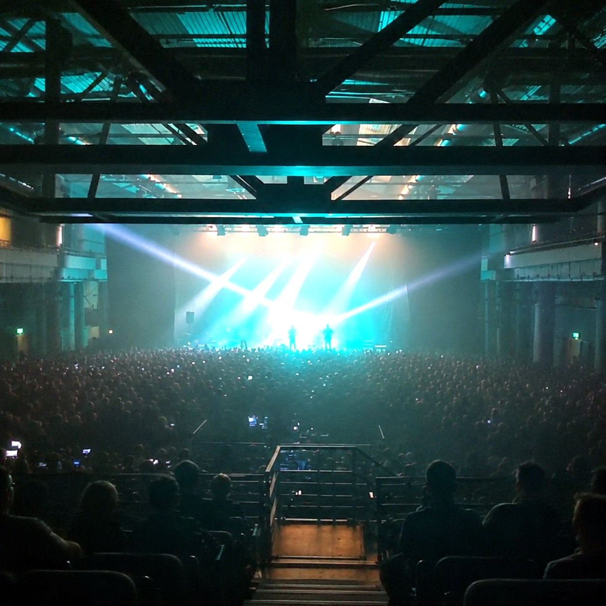
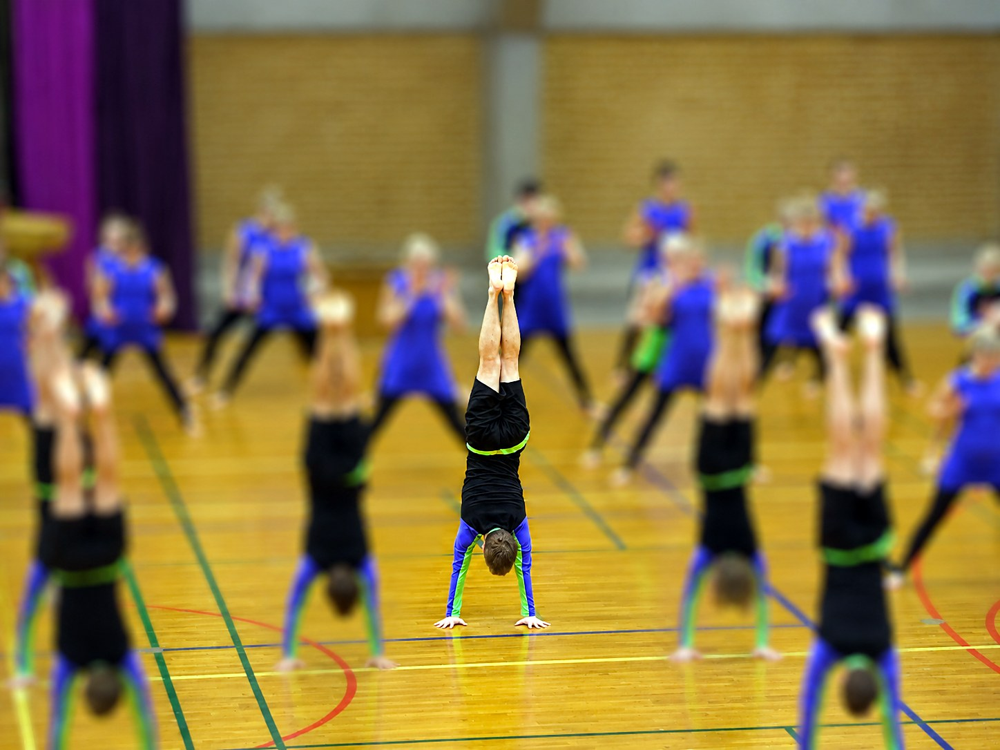
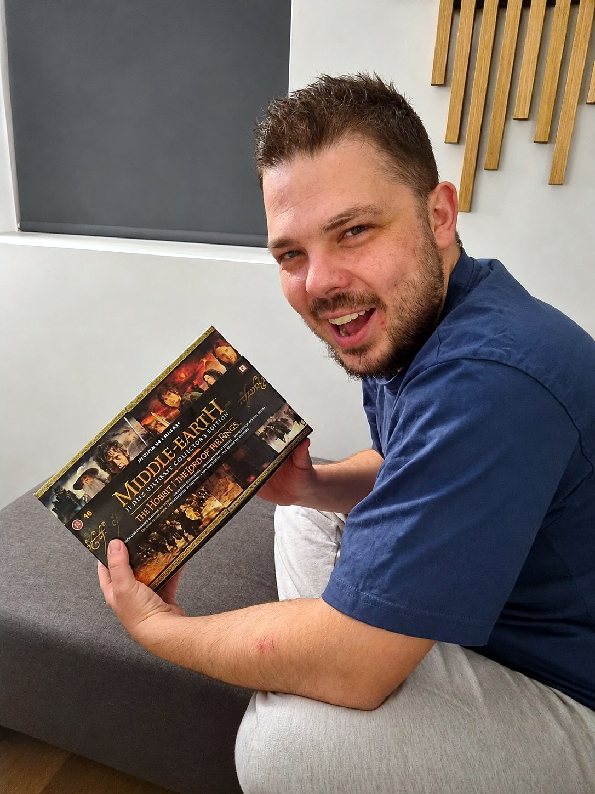

Hej, jeg hedder Rune
Jeg er multimediedesignstuderende på 3. semester og kan bedst lide at starte med at forstå, hvem det er til, før jeg begynder at designe.
Jeg arbejder struktureret og kan godt lide at tænke kreativt. Det, der interesserer mig mest, er mødet mellem mennesker, design og teknologi.

Rune, AalborgHvem er jeg?
Det skal virke, ikke kun se godt ud
For mig handler design ikke kun om, hvordan noget ser ud. Det skal også være nemt at forstå og rart at bruge, og det er der, jeg bruger mest tid.
Jeg er pligtopfyldende og detaljeorienteret og kan godt lide at skabe overblik. Jeg øver mig i ikke at hænge fast i detaljerne, så tingene også bliver færdige.
Sådan arbejder jeg
Seks trin, som jeg har brugt i mine projekter på studiet.
Research
Jeg finder ud af, hvem det er til, og hvad de har brug for.
Idé & retning
Jeg samler det, jeg har lært, og vælger en retning.
Design
Jeg laver wireframes og mockups, så retningen bliver til rigtige sider.
Prototype & test
Jeg lader andre prøve det af og lytter til, hvad de siger.
Udvikling
Jeg koder det i HTML, CSS og JavaScript.
Resultat
Jeg ser på, hvad der blev til, og hvad vi kunne have gjort bedre.
Sådan er jeg at arbejde med
Omsorgsfuld, fleksibel og detaljeorienteret
Jeg lægger vægt på gode relationer, tryghed og samarbejde. Folk omkring mig beskriver mig som varm, loyal, omsorgsfuld og støttende. Jeg er tålmodig og vil gerne hjælpe.
Min tilgang
Lyt først.
Skab overblik.
Undersøg mulighederne.
Forbedr løsningen.
Lidt om mig
Mere end bare design og kode
Jeg er 32 år, bor i Aalborg og er far til to skønne børn. Familien fylder klart mest i mit liv, og jeg nyder at bruge tid sammen med dem, uanset om det er i sofaen, på en tur i naturen eller på eventyr rundt i Nordjylland.
Jeg er nysgerrig og har altid haft en interesse for at skabe, udforske og lære nyt. Det gælder både på studiet, i mine projekter og i min fritid, hvor jeg elsker at fordybe mig i alt fra spil og musik til gamle hobbyer som gymnastik.






Mine interesser
Det her bruger jeg tid på, når jeg ikke sidder med design.
Min største prioritet. Jeg nyder at bruge tid sammen, store som små.
Når der er tid, ryger controlleren frem. En god måde at koble fra på.
Magic: The Gathering og Pokémon. Strategi, samling og fællesskab.
Jeg lytter til næsten alle genrer, fra roligt i baggrunden til fuld koncertstemning.
En tidligere passion, der har givet mig disciplin og gode oplevelser.
En god serie og en kop kaffe er en fin afslutning på dagen.